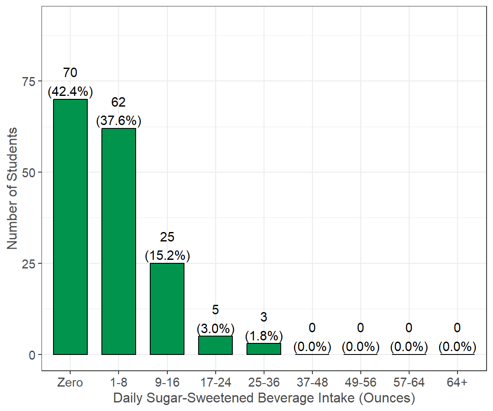

Eating Habits
Students were asked to report questions related to their eating habits. This includes cooking habits, access to kitchens, access to storing food, fruit and vegetable intake, sugar-sweetened beverage intake, fast food intake, alcohol intake, and confidence in cooking.
As a reminder, students had the option to select “Prefer not to answer” for all questions, and these responses were set as missing values. In addition, 11 (6.0%) students did not finish the survey. The n reporting refers to the total number of non-missing responses, while the percent reporting reflects the percent of non-missing responses.
Food Access and Eating Behaviors
Survey Question: For each of the following statements, indicate how strongly you agree or disagree about your current eating and cooking habits:
Summary: Some highlights of the results include the following: A total of 42 (25.3%) students agreed or strongly agreed that they did not have access to a kitchen; 70 (41.9%) agreed or strongly agreed that they did not have enough room to store food items; 67 (40.6%) agreed or strongly agreed that thinking about food was stressful or caused anxiety; and 56 (34.8%) agreed or strongly agreed that they wished they had more food to eat.
Daily Fruit & Vegetable Intake
Summary: A total of 20 (12.7%) students reported usually eating zero servings of fruits and vegetables per day, 109 (69.4%) reported eating one to two servings per day, 23 (14.6%) reported eating three to four servings per day, and only 5 (3.2%) reported eating five or more servings per day.
Daily Sugar-Sweetened Beverage Intake

Survey Question: How many ounces of regular soda/cola/pop, sports drinks, energy drinks, or sweetened coffee and tea beverages do you consume each day? Do NOT count diet or zero-calorie drinks. Consider 8 ounces is 1 cup/glass of soda; 1 can of soda is 12 ounces; 1 bottle of juice is typically 16-20 ounces; 2 Liter bottle of soda is 68 oz; 1 Liter sweetened iced tea is 34 oz
Summary: A total of 70 (42.4%) students reported drinking zero servings of sugar-sweetened beverages per day, 62 (37.6%) reported drinking one to eight ounces per day, and 25 (15.2%) reported drinking nine to 16 ounces per day. The remaining 8 (4.8%) students reported drinking 17 or more ounces per day.
Weekly Fast Food Intake

Survey Question: How frequently do you eat from fast food restaurants, convenience stores, or vending machines for a meal or meal replacement?
Summary: A total of 31 (18.7%) students reported eating fast food zero times per week, 87 (52.4%) reported eating fast food one to two times per week, 34 (20.5%) reported eating fast food three to four times, and the remaining 14 (8.4%) reported eating fast food five or more times per week.
Weekly Alcohol Intake
Summary: A total of 118 (73.8%) reported drinking alcohol zero times per week, 32 (20.0%) reported drinking alcohol one to two days a week, and the remaining 10 (6.2%) reported drinking alcohol three or more days per week.
Alcohol Servings Consumed
Additional Notes: This question was displayed only to students who reported drinking alcohol one or more times per week (see Weekly Alcohol Intake).
Summary: Of the students that reported drinking at least once per week, 3 (7.3%) reported drinking less than one serving when they drink, 23 (56.1%) reported drinking one to two servings, 10 (24.4%) reported drinking three to four servings, and 5 (12.2%) reported drinking five or more servings.
Cooking Confidence
Survey Question: The following questions pertain to how comfortable you feel about buying or preparing food:3
Summary: Overall, the majority of students feel confident in their cooking habits. A notable 54 (33.1%) students were neutral, not very confident, or not at all confident that they can use the same healthy ingredients in more than one meal; 28 (16.9%) were neutral, not very confident, or not at all confident that they can use basic cooking skills; 63 (38.7%) were neutral, not very confident, or not at all confident that they can buy healthy food for their family on a budget; and 53 (32.3%) were neutral, not very confident, or not at all confident that they can cook healthy meals for their family on a budget.
Footnotes:
This question was developed from the Fall 2015-Spring 2019 American College Health Association’s National College Health Assessment, which is no longer publicly available.
These questions were developed by the Behavioral Risk Factor Surveillance System screening tool.
These questions were developed by the Share Our Strength’s Cooking Matters survey tool (a USDA SNAP-Ed approved survey).